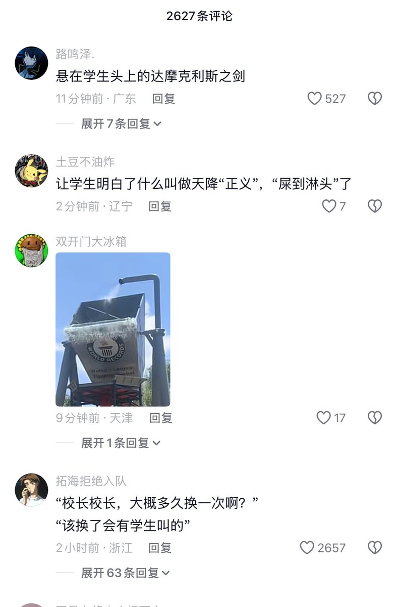
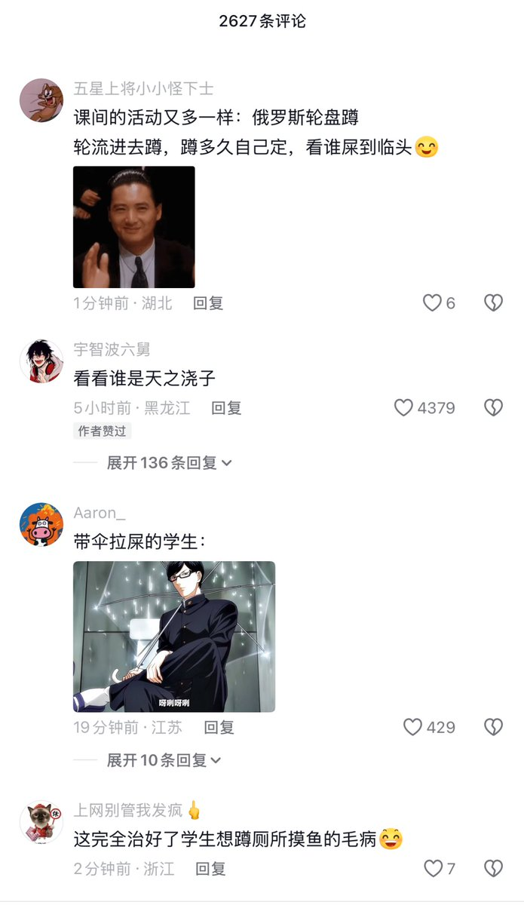

许白
@xubai_01
笑死我了拉屎还附魔


李老师不是你老师
@whyyoutouzhele
4月4日，延安市育英中学，校内厕所天花板上的排污管发生泄露，学校没有及时修理，而是用一个豆瓣酱桶挂在排污管下面接着。
这导致学生们每天上厕所都提心吊胆，头顶上那个装满粪水的豆瓣酱桶犹豫悬挂头顶上的达摩克里斯之剑。如果豆瓣酱桶掉落，学生则会“屎到临头”。 https://t.co/d0PfjmM0Q2